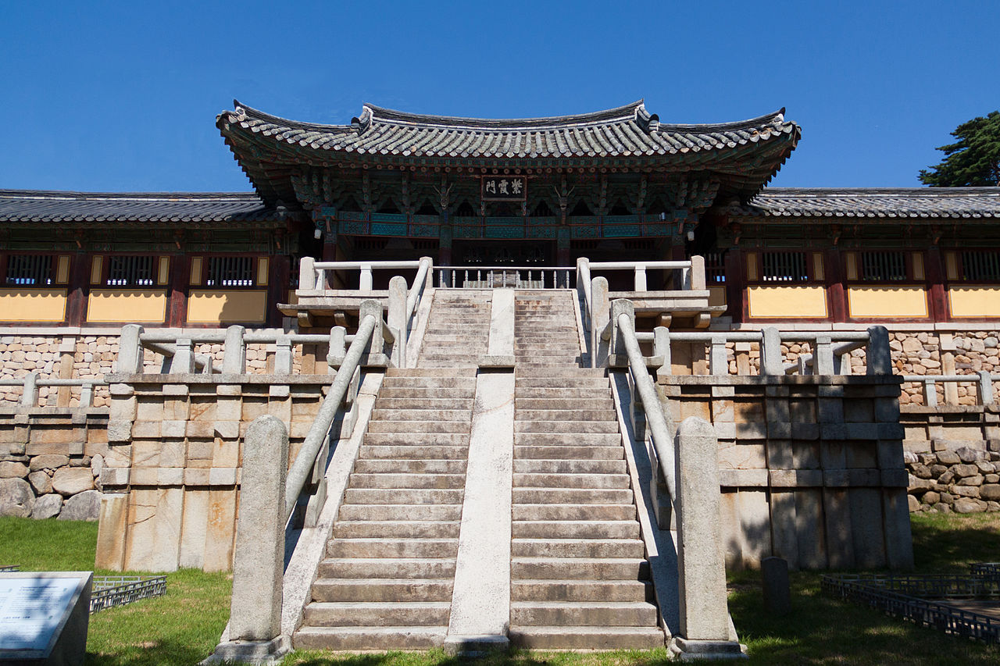

Традиції та святкування
Корейські традиції мають багатовікову історію. Основні свята — це Сольналь (корейський Новий рік) та Чусок (день подяки). Люди одягають ханбок — традиційний одяг, вшановують предків і насолоджуються національними стравами, як-от токкук (рисовий суп) та сонпьон (рисові тістечка).
Природа та архітектура
Корея вражає своїми природними пейзажами — гори, ліси, озера. Водночас архітектура зберігає дух давнини: палаци, як Гьонбоккун, і буддистські храми, як Пульгукса, — є важливими пам’ятками. Гармонія між природою та архітектурою створює унікальну атмосферу.
Сучасна культура
Корея стала культурним центром світу завдяки популярності K-pop, дорам, моді та косметиці. Групи на кшталт BTS, BLACKPINK мають мільйони фанатів. Кіно та серіали здобули міжнародні нагороди, а косметичні продукти завойовують ринки Європи та Америки. Це поєднання традицій та інновацій робить Корею унікальною.